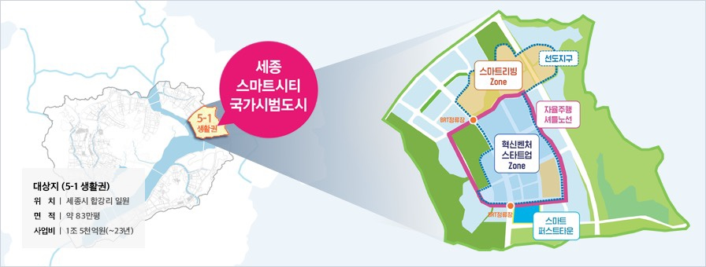
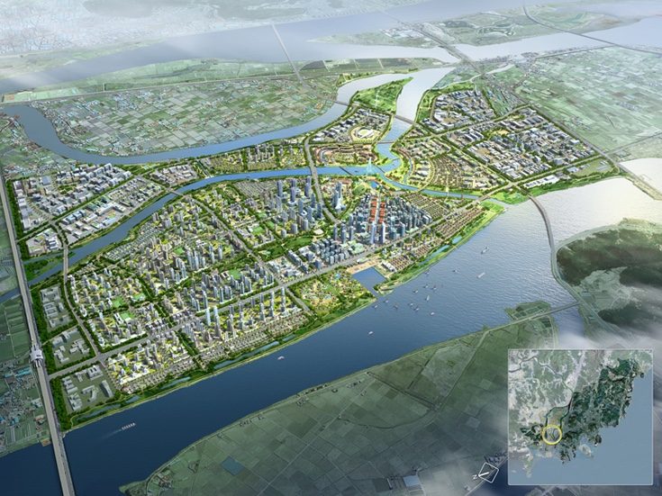

한중국의 스마트도시
스마트 시티란 첨단 정보통신기술(ICT)을 이용해 도시 생활 속에서 유발되는
교통 문제, 환경 문제, 주거 문제, 시설 비효율 등을 해결하여
시민들이 편리하고 쾌적한 삶을 누릴 수 있도록 한 '똑똑한 도시'를 뜻한다.
스마트 시티는 도시 문제를 해소할 수 있을 뿐만 아니라 4차 산업혁명에 선제적으로 대응하고
새로운 성장 동력을 창출할 수있는 대안으로 떠오르면서, 세계 각국의 도시가 스마트 시티 구축에 나서고 있다.
스마트 시티가 구축되면 실시간으로 교통정보를 얻을 수 있어 이동 거리가 줄고,
원격 근무가 가능해지는 등 거주자들의 생활이 편리해질 뿐만 아니라 이산화탄소 배출량도 줄일 수 있다.
출처 : 네이버백과사전[스마트 시티란](링크)
한국의 스마트도시
한국은 세종과 부산에 스마트 시티 국가 시범도시를 조성한다.
세종시 스마트시티 국가 시범도시인 세종시 5-1 생활권은 행복도시 미호천과 금강의 합수부에 위치한 자연환경이 수려한 지역으로,
행복도시 내 자족기능을 담당하는 4-2 생활권의 산학연 클러스터와 인접한 곳에 조성된다.

세종 5-1 생활권은 7대 혁신 요소인 모빌리티, 헬스케어, 교육과 일자리, 에너지와 환경,
거버넌스, 문화 및 쇼핑, 생활과 안전 구현에 최적화된 도시공간을 계획하고 개발을 추진한다.
세종시 국가시범도시는 도시의 계획부터 운영까지 시민과 함께 만드는 도시로,
시민의 다양한 참여기반을 조성하고, 효율적인 협업체계를 구성하여 시민이 체감할 수 있는 스마트 서비스를 제공한다.
에코델타시티(Eco - Delta - city)는 부산광역시 강서구에 조성예정인 대규모 친환경 수변 신도시이다.
시행자는 K-water(80%), 부산도시공사(20%)고 주거시설, 업무시설 등 기타시설이 들어설 예정이다.
국가하천 주변지를 체계적이고 계획적인 개발을 통해 하천중심의 미래 지향적인 수변도시를 조성하고
부산신항만, 김해국제공항, 신항 배후철도, 남해고속도로 등 우수한 광역 교통체계와
지정학적 위치를 활용한 거점지역 육성으로 부산권 경제 활성화 및 미래 신성장 동력 구축 할 예정이다.

출처 1: 부산 에코델타 스마트시티 사업개요(링크)
출처 2: 부산 에코델타 시티(링크)
중국의 스마트도시
중국 행정당국이 도시를 분류하는 등급들 중 '1.2선 도시'가 있다.
도시별 GDP, 인구, 환경, 및 생활 수준, 경제력 등을 종합 평가하여 등급을 정하는 것인데,
각 도시별 GDP를 통해서 높은 등급의 도시들은 스마트도시를 꿈꾸고 있다는 것이다.
중국에는 총 8개의 스마트도시가 있다. 이 중에서 가장 유명한 도시인 북경과 상해를 제외하고
나머지 6개 도시를 소개해보겠다.
신흥 도시로서 30년동안 활발한 발전은 이제 스마트도시를 향해서 가고 있다.
최근 몇 년 동안 선전의 디지털 경제와 스마트 산업은 중국을 포함하여 세계를 선도하고 있다.
화웨이와 텐센트와 같은 세계적 수준의 하이테크 기업이 이곳에서 탄생하였다.
심천은 인공 지능과 빅 데이터 기술을 사용하여 교육, 의료, 주택, 사회 보장,
교통 및 기타 분야의 하이테크 기업과 협력하고 있다.

저장성 성도이자 직원이 18명에 불과한 회사에서 20년만에 전자 상거래, 금융,
클라우드 컴퓨팅 및 빅 데이터 서비스를 포괄하여 국제적인 강자기업으로 성장한 알리바바의 고향이다.
현재 항저우는 새로운 소매와 현금 없는 사회가 항저우의 트렌드이다.
무인 슈퍼마켓, 무인 식당, 모바일 결제는 이제 항저우에선 일상 생활의 일부가 되었고,
최근 Hangzhou City Management에서 AI를 도시 두뇌 시스템에 채택하였다.
그 결과 실시간으로 교통 상황을 모니터링하고 도로의 차량 수를 수집, 종합하여 교통량에 따라 신호등을 조정할 수 있다.
충칭은 지리적 환경과 객관적 조건이 우월하진 않지만
최근 몇년 동안 도시는 스마트 시티 건설의 다양한 분야에서 지속적인 노력을 기울이고 있는 도시다.
2017년 말까지 충칭에서는 120개 이상의 산업용 로봇 기업이 있으며, 생산량은 79억 8천만 위안정도인 부유한 도시이다.
이러한 바탕으로 충칭은 로봇 연구과 활발히 진행중이며, 중국내 로봇 산업 기지가 되어가고 있다.
충칭시의 빅 데이터 공동 혁신 센터와 최초의 국가 5G 테스트 사이트의 출범으로
중국 남서부 디지털 경제와 스마트 산업의 중요한 혁신 기지가 될 것이다.
디지털 경제 선도 도시 청두는 항저우와 비슷하게 모바일 결제가 상용화되어가고 있는 중이다.
QR코드와 페이스 페이먼트를 통해 결제하는 방식이 채용되어 많은 상점에서 채택되고 있다.
대학이 위치하고 있는 도시에서 2번째로 많은 우한은 16개의 국제 스마트시티 평가 표준 도시이다.
그 중 4개는 두바이, 싱가포르 등 40개 이상의 시범 도시에 대한 평가 기준이 되었다.
구이저우성의 성도인 구이양은 한때 미개발 도시였지만 지금은 중국의 "빅 데이터 밸리"가 되었다.
2015년부터 중국 국제 빅 데이터 산업 박람회가 4년 연속 구이양에서 성공적으로 개최되었고,
알리바바, 텐센트, 애플등 많은 하이테크 기업들이 구이저우에 빅 데이터 센터를 건설하기로 결정하였다.
출처: 중국의 8개 스마트 시티 중 몇 개를 알고 있나요?(링크)